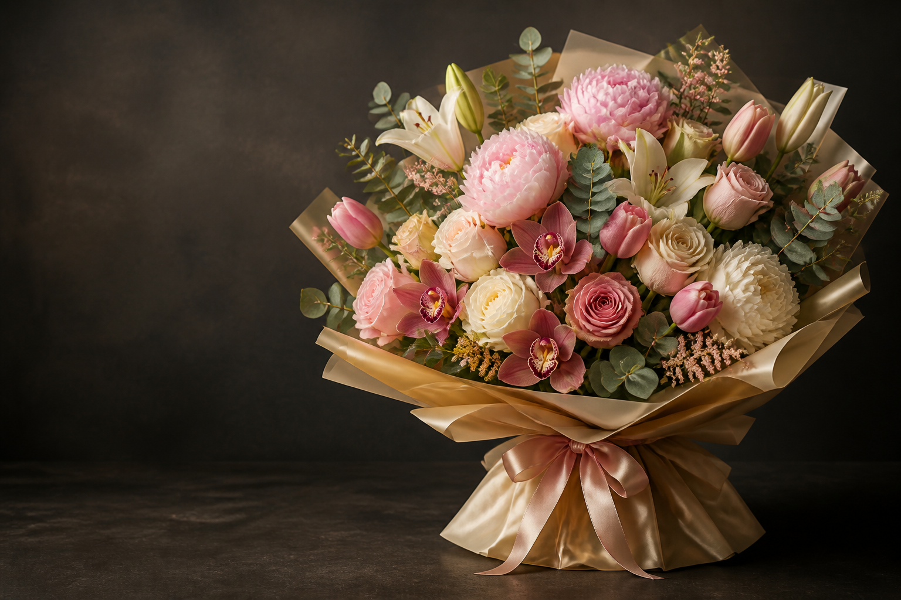

Free to create
Rose Blush digital bouquet
Birthday, anniversary, and romantic notes
A refined arrangement of garden roses, peonies, and eucalyptus paired with a private greeting card.
Online virtual flower gifting
digitalbouquet.top helps you make a digital bouquet with elegant virtual flowers, flower meanings, and ready-to-use greetings for birthdays, holidays, romance, thanks, and everyday care.

Signature digital bouquet styles
Free to create
Birthday, anniversary, and romantic notes
A refined arrangement of garden roses, peonies, and eucalyptus paired with a private greeting card.
Free to create
Luxury thank-you gifts and milestone moments
Dark orchids, ivory tulips, and champagne accents for messages that should feel composed and rare.
Free to create
Get well, congratulations, and everyday care
A bright floral keepsake with lilies, ranunculus, soft greenery, and a warm handwritten note.
Flower meanings
Love, devotion, romance, and a warm personal message.
Elegance, admiration, strength, and refined gratitude.
Fresh starts, sincere affection, and graceful optimism.
Celebration, prosperity, romance, and gentle abundance.
Calm, respect, sympathy, renewal, and quiet support.
Joy, confidence, encouragement, and bright energy.
How it works
Digital bouquet guide
A digital bouquet is an online flower gift that combines a floral arrangement, a greeting card, and a polished page. Instead of waiting for delivery, you can create a digital bouquet in minutes and make the message feel personal. On digitalbouquet.top, every digital bouquet is free to start and can be matched with a mood, occasion, flower meaning, and short blessing for easy online sharing.
The main benefit of a digital bouquet is speed without losing emotion. You can send digital flowers for birthdays, anniversaries, thank-you notes, get-well wishes, congratulations, holidays, or quiet support. Roses can express love, orchids can show admiration, tulips can mark a fresh start, and lilies can bring a calm tone.
A digital bouquet works across distance, time zones, and busy schedules. You do not need a delivery address, and the recipient can open the gift on a phone, tablet, or desktop. A digital bouquet also avoids missed deliveries, damaged petals, and last-minute shop closures. It is a simple way to show care when you want a gesture to arrive now.
Each digital bouquet can be matched with a message template. You can use a happy birthday digital flower note, a happy birthday digital bouquet wish, a thank-you line, a romantic anniversary message, a sympathy greeting, or a holiday blessing. These templates keep the words warm without making the gift feel generic.
Many visitors use digitalbouquet.top to create a bouquet for birthdays, Valentine's Day, Mother's Day, graduations, get-well wishes, wedding congratulations, and everyday encouragement. A digital bouquet is also useful when you want a small but meaningful surprise before a physical gift arrives.
Creative users also explore digital flower design, digital flower art, digital flower illustration, and digital flower painting ideas. If someone searches for digital flower bouquet maker, virtual flower bouquet, digital flower shop, or create a bouquet online, this site gives them a focused place to begin.
A strong digital bouquet needs intention. Our flower meaning guides explain why red roses feel romantic, why orchids feel refined, why tulips are good for fresh starts, and why sunflowers feel optimistic. Greeting templates then turn that intention into words.
For holidays and special scenes, the site connects flowers with context. A birthday digital bouquet can feel bright and joyful. An anniversary digital bouquet can feel intimate and elegant. A sympathy digital bouquet should be quiet, respectful, and simple.
Yes. A digital bouquet is shared online, so it can reach someone immediately after you create the greeting and choose the flower style.
Yes. A happy birthday digital bouquet is one of the most popular uses because it feels warmer than a plain message and faster than physical delivery.
A digital flower may be a single image or artwork, while a digital bouquet usually combines several flowers, a message, and a complete gift presentation.
Yes. Flower meanings help you choose a digital bouquet that reflects love, gratitude, comfort, celebration, or encouragement.